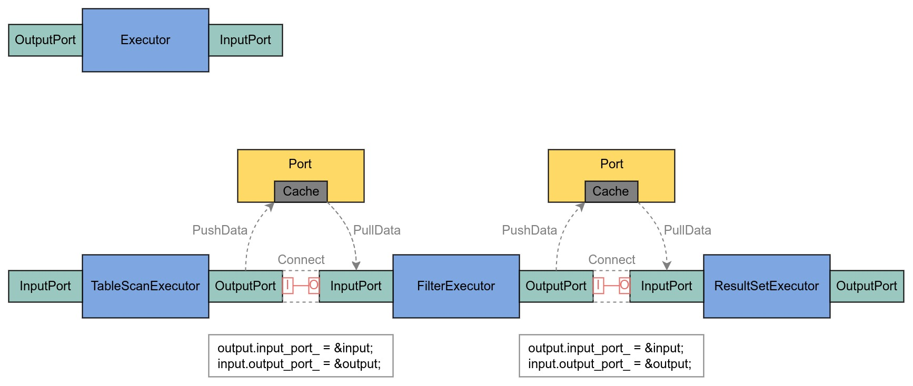

Ch06-AmDB 之 Executor
December 6, 2022
1. 接口定义 #
class IExecutor {
public:
virtual Status Open();
virtual Status Close();
virtual State Prepare() = 0;
virtual Status Work() = 0;
InputPort& CreateInputPort();
OutputPort& CreateOutputPort();
protected:
std::vector<InputPort> inputs_;
std::vector<OutputPort> outputs_;
}
2. 实现原理 #
executor 对数据的处理都是以 chunk 为单位进行处理的。

- 依次遍历所有的 executor，使用 Connect 将 Port 连接到一起；
- 依次遍历所有的 executor，调用每个 executor 的 Open() 将 executor 打开（根据 executor 特性决定，大部分什么操作都不做）；
- 依次遍历所有的 executor，调用每个 executor 的 Prepare() 将 executor 初始化（比如将 chunk 推到 Cache 中）
- 依次遍历所有的 executor，调用每个 executor 的 Work() 执行 executor（比如插入数据/读取数据等）
- 依次遍历所有的 executor，调用每个 executor 的 Close() 将 executor 关闭（大部分什么操作都不做）
当然上述的步骤只是为了方便说明而这么写的，实际上每个 executor 会被多次封装成 task 放入到队列中，由 scheduler 调度执行。